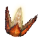
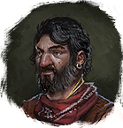

Семечко аумазии
Предметы / Добыча
Открыть в интерактивной вики →
| Вес | 2 |
|---|---|
| Цена | 0 |
Описание
Семечко со множеством свойств. Одно из них — это спасительное воздействие на голос певцов (особенно на высокое С). Их скупает
Для добычи требуется Кровь комара
Кровь комара

Яцек ЦыганДля добычи требуется
Кровь комара| Семечко со многими свойствами. Одно из них — благотворное влияние на голос певцов (особенно на верхнее до). |
Рецепт
Торговля: 17k
Где найти
Применение
|
Как добыть
| Чтобы получить семена аумазии, нужно поместить Кровь комара в цветы на Болотине. Вскоре на лианах вырастают семена аумазии, и их можно собрать. |